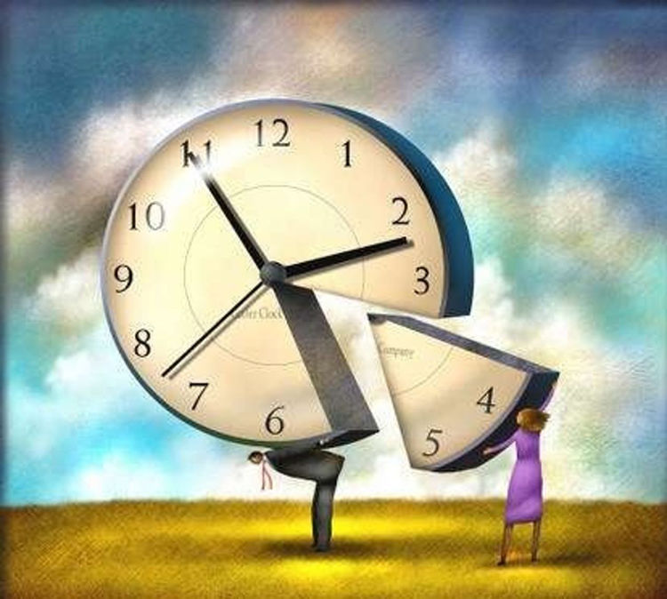

В конце XIX века крупный русский физиолог Введенский Николай Евгеньевич как-то сказал «Мы устаем и изнемогаем не потому, что много работаем, а потому, что плохо работаем, не организованно работаем, бестолково работаем».
20-е годы XX века — период развития научной организации труда (НОТ). А. К. Гастев — директор центрального института труда (ЦИТ) развивает идеи о том, что эффективность организации начинается с личной эффективности, в частности эффективного использования времени. Общественное движение борьбы за время привело к созданию Лиги «Время», руководителем которой был П. М. Керженцев. В газетах стали появляться постоянные рубрики «Борьба за время». Лига была закрыта с окончанием НЭПа.
В начале 1970-х годов после издания книги Д. Гранина «Эта странная жизнь» получил известность метод биолога А. А. Любищева — хронометраж как основа системы управления личным временем и бюджетирование расходов времени. Основная идея — эффективное мышление как основа личной эффективности, хронометраж — инструмент выработки этого мышления.
В 2007 году в Московском финансово-промышленном университете «Синергия» (до 2010 г. — МФПА) была о ткрыта первая в стране кафедра тайм-менеджмента.